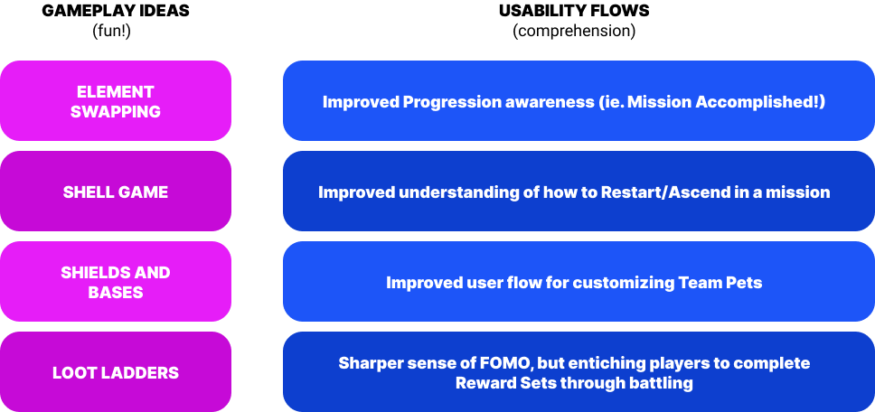
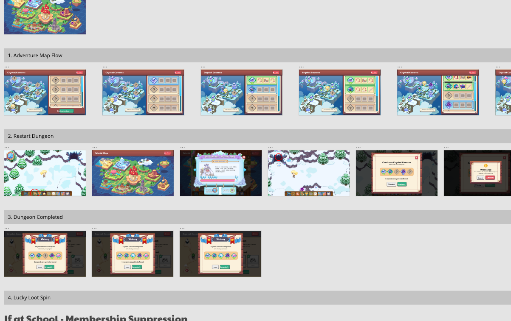

Case Study
Crystal Caverns
Project Goal
The game design team was tasked to build a new feature within an existing (and successful) math game.
The goal was to increase user retention by adding deeper gameplay mechanics, but since this was a product with a solid user base of kids ages 6-12, we needed to validate how much complexity we could add without damaging the educational experience.
Team Structure
I came into this project a little later than the rest of the design team (two weeks past the kickoff), and as a result there were already some strong ideas from game designers on mechanics we could use.
Rather than focusing on the end result, I encouraged the team to use our goals as a guiding principle and explore ideas at a higher level before digging too deep.
Our metric goals were:
- The completion rate of the first 6 milestones (the entire Adventure) will be 25% higher than the first 6 quests of any existing zone.
- The number of ‘math battles’ in Crystal Caverns will be at least 25% greater than any other zone for the first 4 weeks of its release
- On average, 50% of players who complete Crystal Caverns will retry it at least once
1. Ideation
We ideated on these goals and came up with a few testable concepts that focused on ‘gameplay mechanics’ and ‘feature discovery’. There was a blurred line between Game and Product Design happening here that I really liked, because they overlap so much when weaving together an awesome experience for players!
Our ideas for the scope of this project were as follows:
2. Wireframes
Before jumping to high-fidelity too quickly, I completed a wireframe flow of the proposed end-to-end experience. This was created in Sketch and was used as content for the GDD. It also served as a touchpoint for discussions, to ensure we were all on the same page for what we were building here.
3. Prototype Time
Once we were aligned and ready to move forward, a plan was made for some ‘high fidelity’ prototyping.
For game mechanics, we used the GameMaker2 game engine to make completely realistic (yet flexible) prototypes that could be adjusted easily based on our research findings. Three rounds of testing happened on this front, visiting classrooms in the area.
I wasn’t using Unity for this particular project, but knowledge of C# helped me jump into this game engine with no pauses. I collaborated fully with GDs on creating these experiences.
To accompany these playtests, I also used ProtoPie to simulate some complexity around interfaces. We were able to use this along with a script to validate how much our players could handle in terms of cognitive balancing.
4. Classroom Visits
Our testing for this feature was intended to be strictly qualitative until release. Luckily there were a lot of company contacts with teachers, and they were happy to have our team hang out with their students!
Outcomes and Results
After three rounds of classroom testing, we were able to tweak the game mechanics to find that right balance of usability and playbility. A few examples:
- Adding more emphasis on 'healing item' options for tougher battles
- Updating the Restart/Exit flow for missions
- Making players of all ages aware of 'element switching' in battles
In terms of numbers...
- Overall, 90% of users that finish the feature the first time tried again at least once. (50% was the goal)
- The cumulative number of battles in Crystal Caverns is 114% higher than that of the next zone.(25% was the goal)
- The completion rate of the 6th quest of Crystal Caverns is 6.34%, which is higher than the completion rate of the 6th quest of all other major zones. (longevity goal achieved)
Reflection
Crystal Caverns was a great experience for me to learn about game prototyping, and the balance between UX and gameplay challenge!
My main highlight for our project postmortem was to put a focus on low-fidelity and validating hypothesis before digging too deep on realistic game experiences. Prototyping is powerful but it can be a large time investment if you aren't placed on the right path at an early stage.
Just a personal note of caution fortunately, that I've taken forward to all my future efforts!